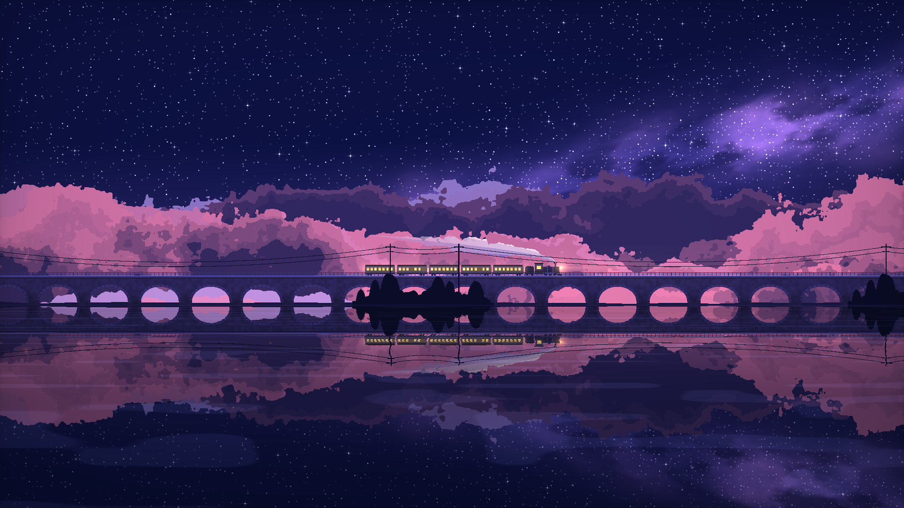
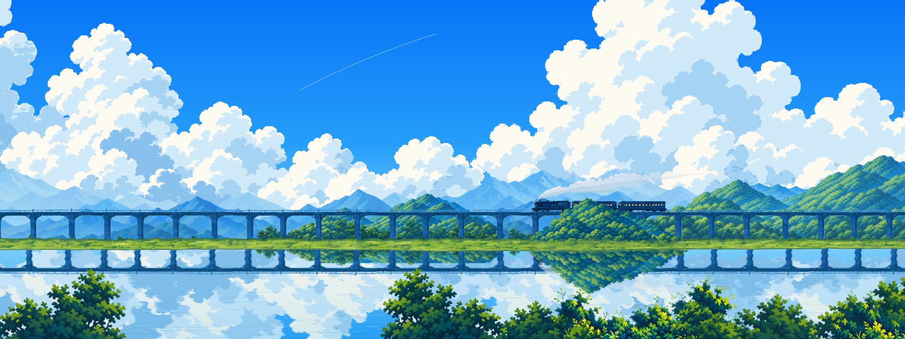

可运行的动态壁纸案例
AI Wallpaper Workshop
这是两套动态列车壁纸和一套制作工作台，用来组织素材分层、实时渲染、检查和导出。
蓝天列车要保留山岸轮廓和局部遮挡，星空列车则可以整景用程序绘制。两套作品把素材分层与实时着色的职责放在不同位置。
同一列车主题的两种渲染实现
蓝天
- 透明素材山体、草岸、列车
- 多层合成视差与局部遮挡
- 水面与蒸汽实时叠加
星空
- 场景参数速度与水面效果
- GLSL绘制云、桥与列车
- 实时画面输出完整场景

放大查看 ↗星空案例是单文件 GLSL 渲染；正文里的蓝天案例使用分层透明素材与程序动效。
分层合成与整景着色
蓝天列车用分层素材搭出远近
山体、草岸和列车拆成透明素材，随镜头移动采用不同速度。局部遮挡和选择性倒影决定了物体怎样穿过场景，水波、蒸汽和枝叶微动由程序叠加。

放大查看 ↗星空列车由 Shader 实时画出
星空、层云、桥、列车和水面用 GLSL 绘制。这个案例保留了单文件 HTML 和参数面板，适合观察速度、背景与水面效果如何一起变化。
制作工作台与交付验证
工作台把合成结果、单层、独立素材和参考图并列为四种视图。制作 Skill 记录图层与渲染职责，验收 Skill 保存基线，复核画面、功能和离线导出。现有完整验收适配蓝天案例。